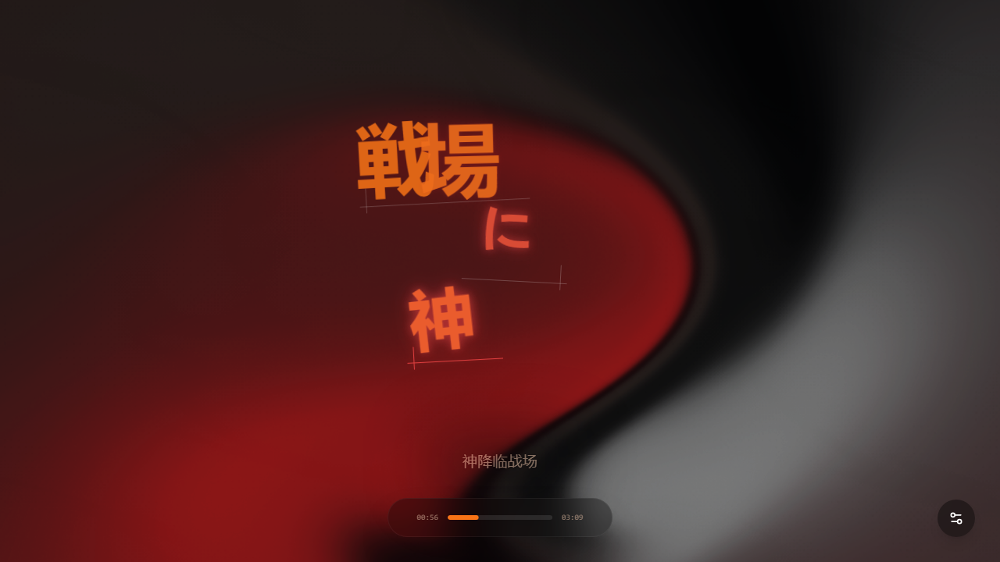
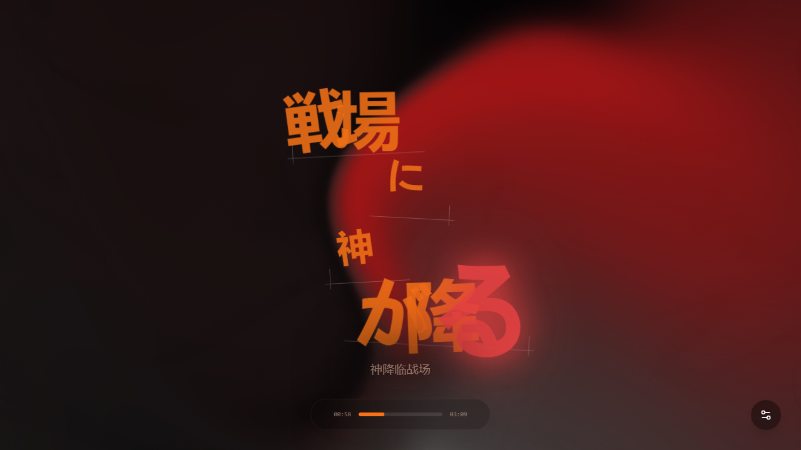
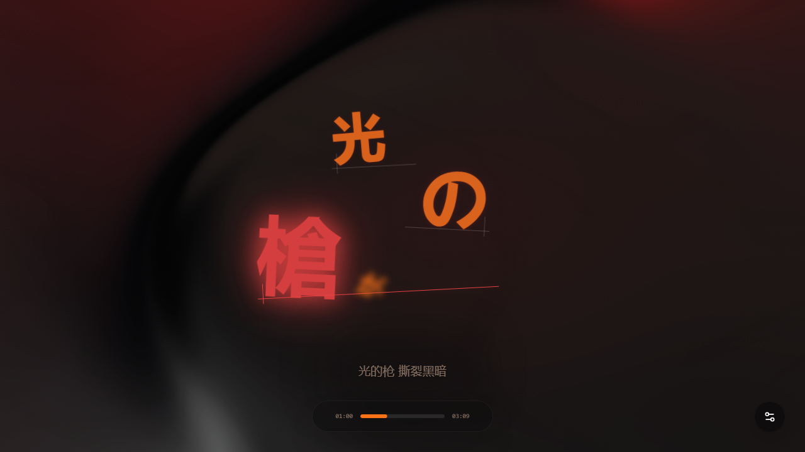

US-008 三配方审片表
| 配方 | 54.2s | 56.2s | 58.2s |
|---|
Livehouse 现场
舞台灯、颗粒感、人群能量
{"id":"livehouse","intensity":84,"temperature":12,"chorusImpact":92}
|
 |  |  |
雨窗民谣
低饱和、柔光、雨夜玻璃
{"id":"rain-window","intensity":38,"temperature":-8,"chorusImpact":44}
|
| | |
夏夜霓虹
霓虹、潮湿路面、副歌炸开
{"id":"neon-night","intensity":72,"temperature":4,"chorusImpact":76}
|
| | |